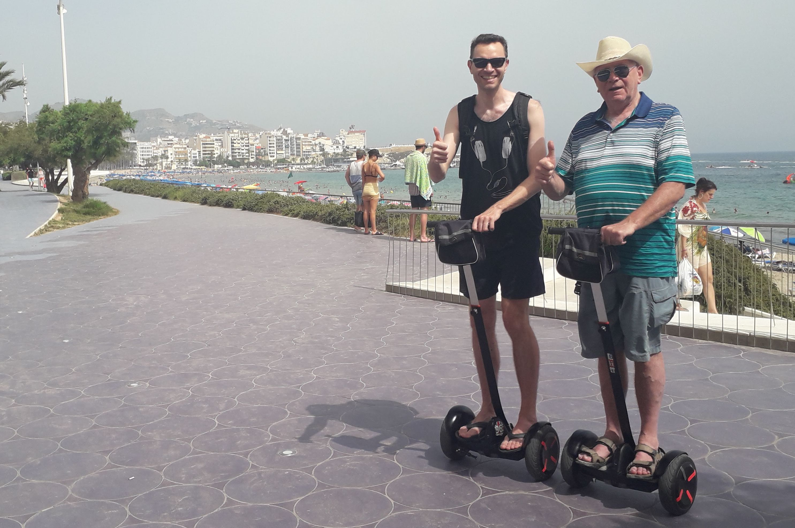

<div class="modal">
  <!-- Modal content -->
  <div class="modal-content">
    <span class="close" (click)="close()"> &times;</span>
    <p>
      Hi Haufe, I REALLY enjoyed doing this test and it has been one of the best
      prepared tests I have done, and I have done quite a lot.
    </p>
    <p>
      I have researched your company and I'm very impressed by your brand and
      what you stand for. You have an impressive lists of clients and services
      that you offer.
    </p>

    <p>To help you like me:</p>
    <ul>
      <li>I speak a good level of Spanish, I've been here over 3 years</li>
      <li>
        I have a lot of FrontEnd experience, especially in Angular, React and
        Vue, take a look at my online portfolio:
        <a href="https://jpm.netlify.com" target="_blank"
          >https://jpm.netlify.com</a
        >
      </li>

      <li>
        I'm at my best when I'm working on a project, in a team or solo, I don't
        mind. I prefer to work in a team and bounce ideas.
      </li>
      <li>
        I'm always learning new techniques and technology to help us in
        Front-End
      </li>

      <li>
        I have no plans to leave Barcelona, I have a daughter here and I own an
        apartment here.
      </li>
    </ul>

    <p>
      It would be really great to hear back from you, even if your answer is a
      No, (you can give me some feedback), or even if you would like a chat.
    </p>
    <p>Un Saludo,</p>
    <p>John Moran | 695966706 | johnnymoran44@hotmail.com</p>
    <p>
      <span
        class="photo"
        >Me with my Dad on Segways to celebrate my 40th Birthday, in July 2019 -
        Me on the left! :D</span
      >
    </p>
  </div>
</div>
